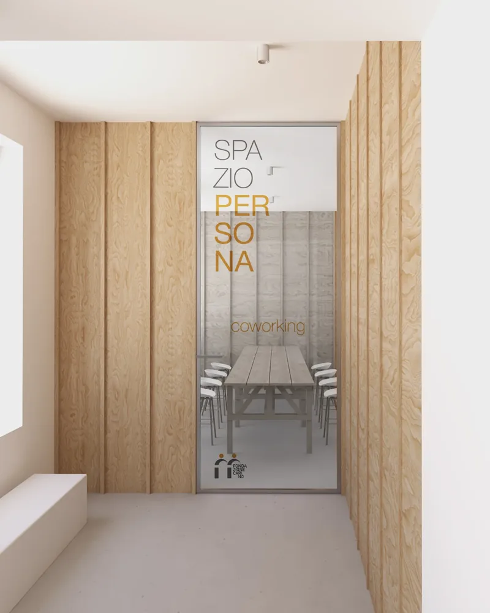

Render e realtà virtuale
Prima di cominciare i lavori è utile vedere come sarà lo spazio. Lo studio usa render e realtà virtuale per mostrare il progetto e decidere insieme al cliente distribuzione, materiali e luce.
Come si usano
- Render: immagini realistiche degli ambienti, utili per confrontare materiali, colori e arredi.
- Realtà virtuale: con un visore si cammina dentro il progetto e si percepiscono proporzioni e altezze come nella realtà.
- Co-progettazione: le alternative si guardano e si discutono insieme, e le scelte si fanno prima del cantiere.
Per le visualizzazioni architettoniche lo studio collabora con VISION, studio di Modena specializzato in immagini fotorealistiche ed esperienze in realtà virtuale. Sono di VISION i render di Le Pietre, di via Carteria e di Casa AD.
Render e realtà virtuale accompagnano ogni servizio dello studio, dalla ristrutturazione di appartamenti ai locali commerciali. Per approfondire: render e realtà virtuale, vedere casa prima dei lavori.
Progetti

Interni residenziali

Due appartamenti

Appartamento

Concorso
Parliamo del tuo progetto
Scrivi a info@samuelesilvestriarchitetto.com o chiama il +39 366 493 8286. Lo studio è a Modena, in via Asiago 58, e segue progetti in tutta Italia.